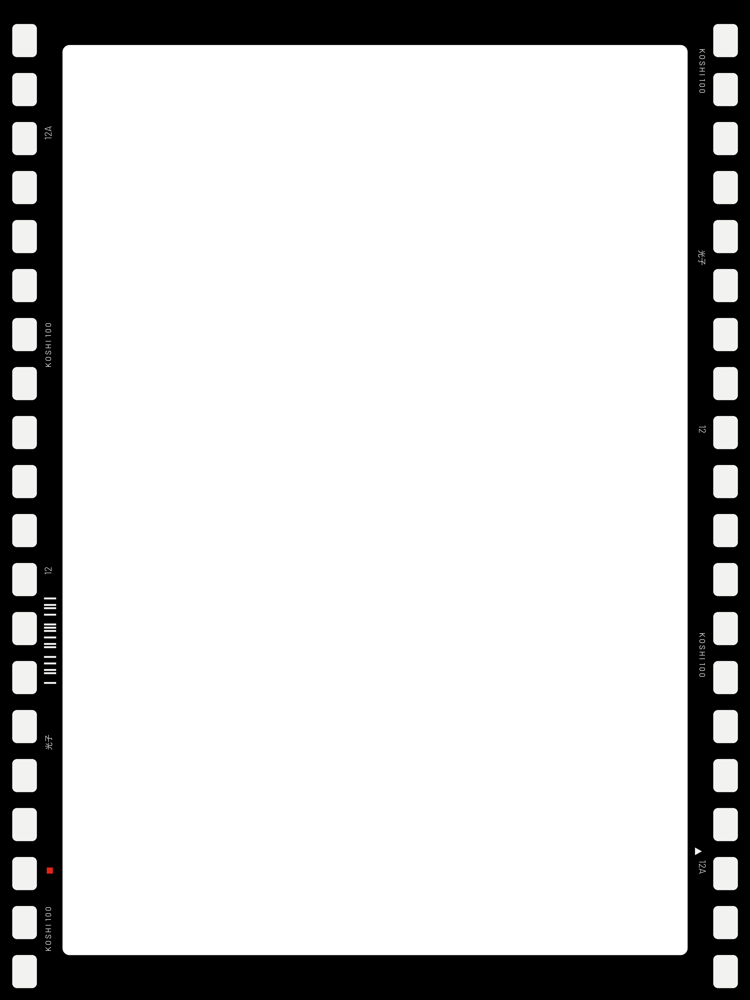
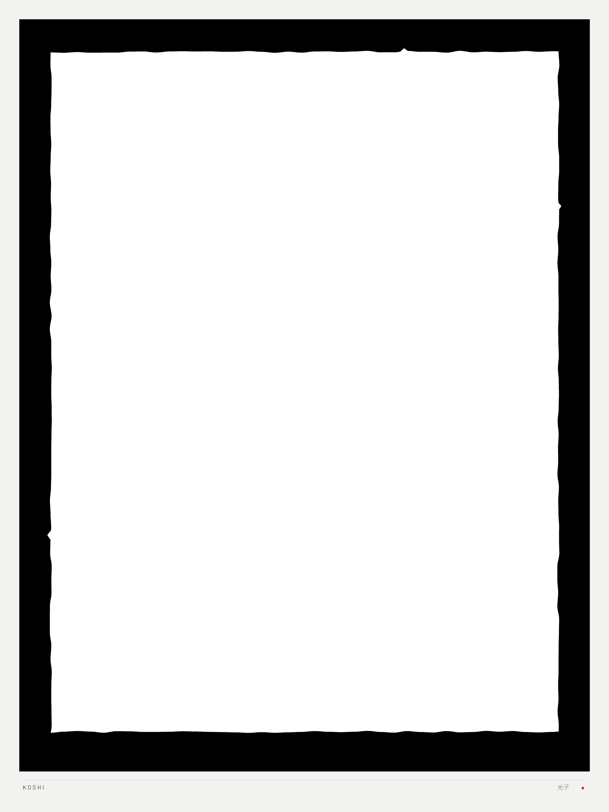
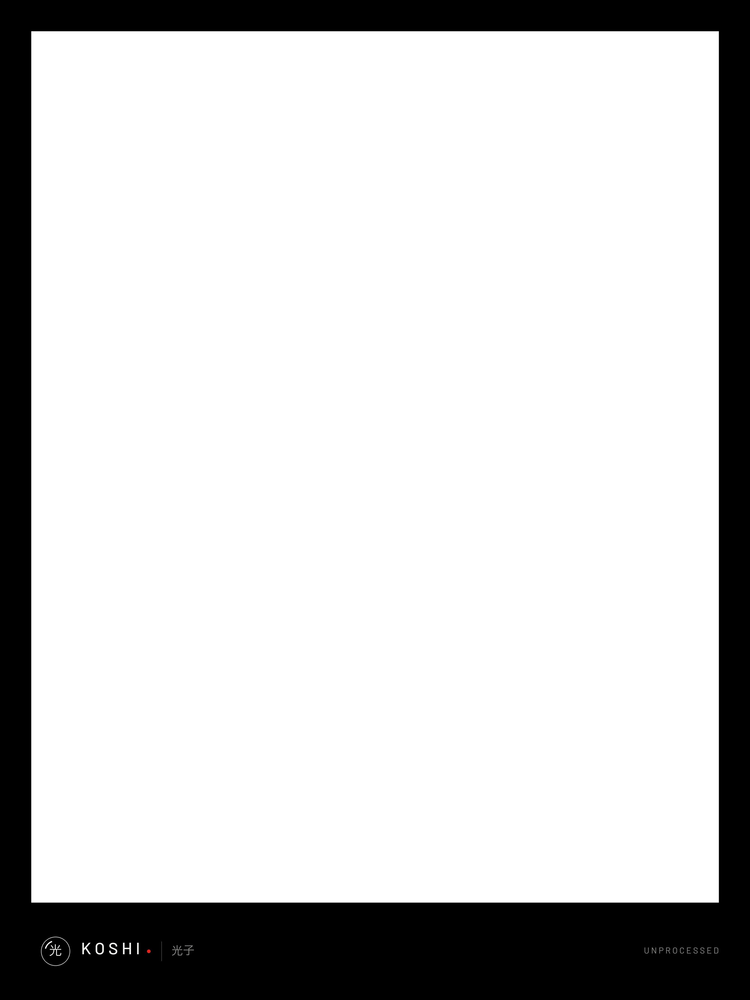

Üç film çerçevesi · fotoğraf, yatay görünüm ve şeffaflık incelemesi
35 mm negatif şeridi; delikli siyah kenarlar, film baskısı ve yuvarlatılmış görüntü kapısı.

El ile eğelenmiş negatif taşıyıcı; düzensiz siyah iç kenar ve kırık beyaz kâğıt payı.

Galeri paspartusu; geniş alt bant, mercek imzası ve sakin teknik satır.
